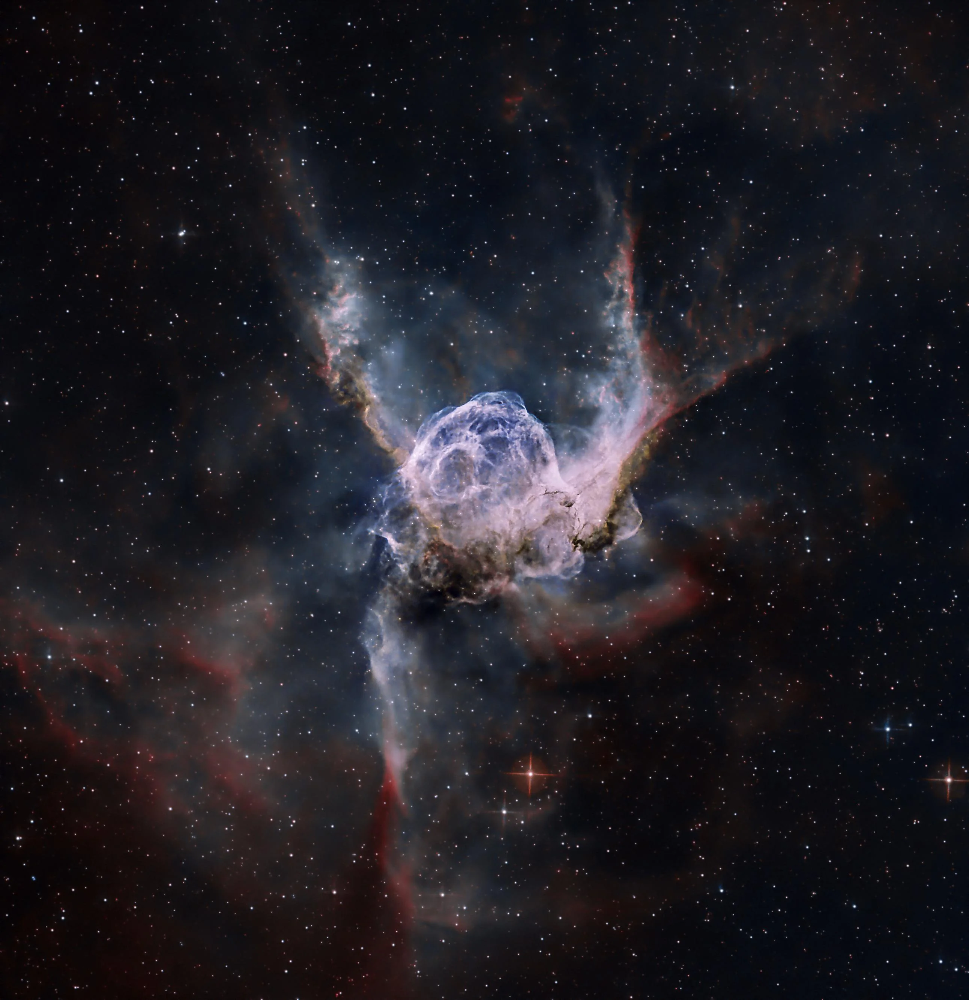

I need to start creating. Just kind of willy-nilly, and not worry about whether its perfect, or whether its gonna change the world or something, or what other people think of it.
I've been consuming to much lately. Not producing anything. I'm full of all this stupid and important stuff I've learned over the past 22 years and I need some way to get it out before
my brain explodes all over my bedroom wall. And I know in the back of mind no one's gonna see this. It's the internet, there's probably more sites someone could visit than atoms in the
visible universe, but that's not the point. Human's have been creators since before recorded history. Cave paintings and music, stories and good memories, how many must be lost in time?
Did those artists care if people would still know them? Hell no. And yet in some ways they are still with us. The first muscician's song exists in all songs we here today, through the
creation of music by their succesors, of which we are. Succesors to their original creation. And they too learned from the calls of the birds and insects, who in turn learned from their
predecessors, nature itself: the sound of rain or breaking waves, wind through the trees and the snowfall in the dead of night. A little dramtic sure, but still true.
So now I pick up the mantle, as I would urge everyone who reads this and everyone who does not to do so as well. I certainly hope to improve my HTML/CSS skills (and front-end coding in general)
to make this look a little more impressive than just a wall of text in black and white. I also hope to add some music using abelton and few physical instruments. Maybe some shot on iPhone,
some machine learning projects, sports analyses, poetry, idk. Most importantly I want to write. I've always loved reading, but writing I've gotten to do less of outside of school (which takes the
fun out of most it, besides a few niche cases based on the class itself and the teacher). The point is I just need to make stuff. And I'm kinda looking forward to see what it grows into. Which
feels nice.
"The wheeling birds traced their hieroglyphics in the sky, but they were not for me to read"
-Gene Wolfe, The Sword of the Lictor
